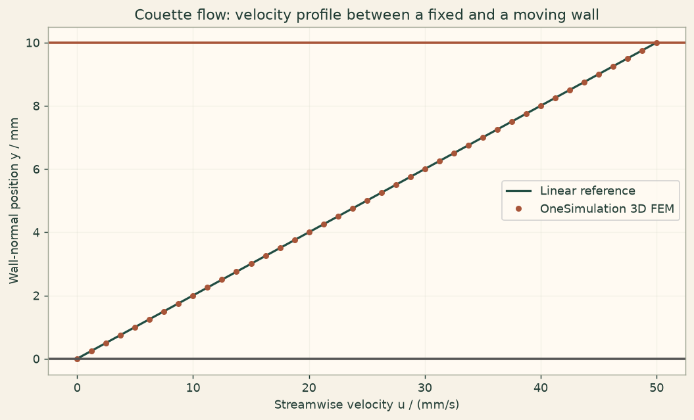

Docs › Examples › Couette flow
Fluid flow · 3D
Couette flow
Flow driven by a moving wall; the linear velocity profile is graded against theory.

What it computes
OneSimulation solves the steady incompressible Navier-Stokes equations with a mixed Taylor-Hood element.
What it checks
The profile matches u(y) = U y / h to solver precision, with constant shear across the gap.
The notebook
The complete notebook, cell by cell. Run it to produce the figures and the comparison printout.
An incompressible Newtonian fluid fills the gap of height \(h\) between two parallel plates. The lower plate is held fixed (no-slip) and the upper plate slides in its own plane at constant speed \(U\). With no applied pressure gradient and no body force, the fully developed steady flow depends only on the wall-normal coordinate \(y\), and the Navier-Stokes momentum balance reduces to
OneSimulation solves the full 3D stationary Navier-Stokes system \(\rho(u\cdot\nabla)u=-\nabla p+\mu\nabla^2 u\) with inf-sup stable Taylor-Hood finite elements (quadratic velocity, linear pressure) and a Newton solver.
Reference. The momentum balance integrates to the linear (shear) profile
We check the computed profile against this straight line.
from importlib.metadata import version
import numpy as np
import matplotlib.pyplot as plt
import matplotlib
from cycler import cycler
from matplotlib.colors import LinearSegmentedColormap
# OneSimulation figure style: cream paper, dark-green ink, green-sand-copper field colours
CREAM, INK, GREEN, COPPER = "#F7F2E7", "#223D35", "#336B57", "#B66E43"
FIELD_CMAP = LinearSegmentedColormap.from_list(
"onesimulation", ["#214D43", "#5F9175", "#A8BC91", "#E4D6A0", "#CD9561", "#A85539"])
DIVERGING_CMAP = LinearSegmentedColormap.from_list(
"onesimulation_diverging", ["#104F54", "#5E9996", "#F7F2E7", "#D2996E", "#A4472D"])
for _cmap in (FIELD_CMAP, DIVERGING_CMAP):
if _cmap.name not in matplotlib.colormaps:
matplotlib.colormaps.register(_cmap)
plt.rcParams.update({
"figure.facecolor": CREAM, "savefig.facecolor": CREAM, "axes.facecolor": "#FFFAF2",
"text.color": INK, "axes.labelcolor": INK, "axes.titlecolor": INK, "axes.edgecolor": "#9FA593",
"xtick.color": INK, "ytick.color": INK, "grid.color": "#D5D7C8", "image.cmap": "onesimulation",
"axes.prop_cycle": cycler(color=[GREEN, COPPER, "#5F9175", "#A85539", "#214D43", "#CD9561", "#8B9A8D"]),
})
from onesim.cad.d3 import Box
from onesim.materials import NewtonianFluid
from onesim.meshing import StructuredTetrahedralMesher
from onesim.numerics import Numerics
from onesim.numerics.fem import FiniteElement, TaylorHood
from onesim.numerics.linear import SparseDirect
from onesim.numerics.nonlinear import Newton
from onesim.physics.hydrodynamics import FixedVelocity, IncompressibleNavierStokes, NoSlipWall
from onesim.simulation import Problem, Simulation
from onesim.simulation.field_constraints import MeanValue
from onesim.simulation.initial_conditions.values import InitialValue
print("OneSimulation:", version("onesimulation"))Parameters
The gap height lies along \(y\); the streamwise length (\(x\)) and spanwise width (\(z\)) only serve to form a short 3D domain. The flow is fully developed, so the solution is independent of \(x\) and \(z\).
length = 0.020 # m, streamwise extent (x)
height = 0.010 # m, plate gap (y), the only physically resolved direction
span = 0.005 # m, spanwise extent (z)
mu = 1.0e-3 # Pa·s, dynamic viscosity
rho = 1.0 # kg/m^3, density (unit value: the inertial term vanishes here)
wall_speed = 0.05 # m/s, speed of the sliding upper plate
reynolds = rho * wall_speed * height / mu
print(f"U = {wall_speed:.3f} m/s, gap h = {height*1e3:.1f} mm, Re = {reynolds:.1f} (laminar)")Model
The plate gap \(h\) is the box width (the \(y\) extent). The lower plate (y_min) is a no-slip wall; the upper plate (y_max) moves at \(U\); the inlet, outlet and spanwise faces carry the fully developed linear trace, so every one of the six boundary faces has an explicit condition.
geometry = Box(length=length, width=height, height=span)
mesh = StructuredTetrahedralMesher(cells=(6, 8, 2)).generate(geometry)
print("Mesh:", mesh.cell_count, "tetrahedra")
fluid = NewtonianFluid(density=rho, dynamic_viscosity=mu)
def moving_wall(x):
# Uniform tangential speed of the upper plate; x only fixes the array shape.
return np.column_stack((np.full_like(x, wall_speed), np.zeros_like(x), np.zeros_like(x)))
def linear_profile(y):
return np.column_stack((wall_speed * y / height, np.zeros_like(y), np.zeros_like(y)))
model = IncompressibleNavierStokes(domain=geometry.volume, material=fluid)
developed = (geometry.boundaries.x_min | geometry.boundaries.x_max
| geometry.boundaries.z_min | geometry.boundaries.z_max)
problem = Problem(
name="Planar Couette flow",
geometry=geometry,
physics=(model,),
boundary_conditions=(
NoSlipWall(boundary=geometry.boundaries.y_min, physics=model),
FixedVelocity(boundary=geometry.boundaries.y_max, physics=model, value=moving_wall),
FixedVelocity(boundary=developed, physics=model, value=linear_profile),
),
constraints=(MeanValue(model.pressure, 0.0),),
initial_conditions=(InitialValue(model.velocity, (0.0, 0.0, 0.0)),),
)
simulation = Simulation(
problem=problem,
mesh=mesh,
numerics=Numerics(
spatial=FiniteElement(element=TaylorHood()),
nonlinear_solver=Newton(
linear_solver=SparseDirect(), absolute_tolerance=1e-11, relative_tolerance=0.0,
),
initial_guess={model.velocity: (0.0, 0.0, 0.0)},
),
)
result = simulation.solve_stationary()Comparison with the linear profile
We sample the streamwise velocity along a wall-normal line at mid-domain and compare with the closed-form straight line. Taylor-Hood velocities are quadratic, so a linear profile is represented essentially to solver precision.
y_samples = np.linspace(0.0, height, 41)
line = np.column_stack((np.full_like(y_samples, length / 2),
y_samples,
np.full_like(y_samples, span / 2)))
u_numeric = np.asarray(result.field(model.velocity).evaluate(line))[:, 0]
u_exact = wall_speed * y_samples / height
max_abs_error = float(np.max(np.abs(u_numeric - u_exact)))
rel_error = max_abs_error / wall_speed
print(f"Wall velocities: lower {u_numeric[0]:.3e} m/s, upper {u_numeric[-1]:.5f} m/s (U={wall_speed:.5f})")
print(f"Maximum absolute profile error: {max_abs_error:.3e} m/s ({100*rel_error:.2e} % of U)")
# The shear rate du/dy must be constant for a linear profile.Figure
cream = "#fbf5eb"
fig, ax = plt.subplots(figsize=(8, 4.8), constrained_layout=True)
fig.patch.set_facecolor(cream)
ax.set_facecolor("#fffaf2")
ax.grid(alpha=0.25)
ax.plot(u_exact * 1000, y_samples * 1000, color="#214D43", lw=1.8, label="Linear reference")
ax.plot(u_numeric * 1000, y_samples * 1000, "o", color="#A85539", ms=4, label="OneSimulation 3D FEM")
ax.axhline(0.0, color="#555", lw=2)
ax.axhline(height * 1000, color="#A85539", lw=2)
ax.set(xlabel="Streamwise velocity u / (mm/s)", ylabel="Wall-normal position y / mm",
title="Couette flow: velocity profile between a fixed and a moving wall")
ax.legend()
plt.show()Going further
Add a constant streamwise body force to the moving wall and recover the generalized Couette-Poiseuille profile, a superposition of the straight line and a parabola. Increase the wall speed until the Reynolds number leaves the creeping regime; the fully developed profile stays linear because the inertial term vanishes for a unidirectional shear flow. Refine the mesh across the gap and confirm the error remains at solver precision, since the linear elements already represent the straight profile exactly.